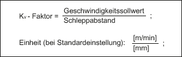

Anzeigedatum | Bedeutung |
|---|
Schleppabstand | Differenz zwischen Lagesollwert und Lageistwert des aktiven Messsystems 1 oder 2 Einheit: mm, inch oder Grad |
Regeldifferenz | Differenz zwischen Lagesollwert am Lagereglereingang und Lageistwert des aktiven Messsystems 1 oder 2 Einheit: mm, inch oder Grad |
Konturabweichung (axial) | Mit diesem Wert wird die aktuelle Konturabweichung angezeigt (Schwankungen des Schleppabstandes hervorgerufen durch Ausregelvorgänge am Drehzahlregler auf Grund von Laständerungen). Die Konturabweichung ergibt sich aus der Differenz zwischen einem aus dem Lagesollwert vorausberechnetem Lageistwert und dem Lageistwert des aktiven Messsystems 1 oder 2. Einheit: mm, inch oder Grad |
Kv-Faktor (errechnet) | Der angezeigte Kv-Faktor wird von der NC nach folgender Formel errechnet: Geschwindigkeitssollwert = Sollwert, der aktuell an die Achse/Spindel ausgegeben wird Weitere Informationen: Funktionshandbuch Achsen und Spindeln |
aktives Messsystem | 0: Kein Messsystem aktiv. 1: Messsystem 1 aktiv. 2: Messsystem 2 aktiv. |
Status Messsystem 1 Status Messsystem 2 | Hier wird der Zustand von Messsystem 1/2 ausgegeben: Aktiv - Parken - Passiv |
Lageistwert Messsystem 1 | Tatsächliche Position der Achse gemessen über Messsystem 1/2 Die Position wird im Maschinenkoordinatensystem (keine Nullpunktverschiebungen und Werkzeugkorrekturen berücksichtigt) angezeigt. Einheit: mm, inch oder Grad |
Lageistwert Messsystem 2 |
Lagesollwert | Vom Interpolator an die Lageregelung ausgegebene Sollposition Einheit: mm, inch oder Grad |
Abs. Kompensationswert
Messsystem 1 | Anzeige des absoluten Kompensationswerts für Messsystem 1/2 Der Kompensationswert besteht aus der Summe von Lose- und Spindelsteigungsfehlerkompensation für die aktuelle Achsposition. Einheit: mm, inch oder Grad |
Abs. Kompensationswert
Messsystem 2 |
Kompensation Durchhang + Temperatur | Anzeige des Kompensationswerts, der sich durch die Summe von Durchhang- und Temperaturkompensation für die aktuelle Achsposition ergibt Einheit: mm, inch oder Grad |
Drehzahlistwert aktiver Geber | Die vom Geber ankommenden Pulse werden von der NC ausgewertet und angezeigt. Einheit: % 100% bedeutet maximale Drehzahl. |
Drehzahlsollwert Antrieb | An den Antrieb übergebener Drehzahlsollwert (= Drehzahlsollwert von Lageregler und Vorsteuerung) Einheit: % 100% bedeutet maximaler Drehzahlsollwert. |
Spindel-Drehzahsollwert programmiert | Vom Anwender programmierter Drehzahlsollwert Einheit: U/min Z. B.: Eingabe: S1000; Anzeige: 1000 U/min Anzeige gilt nur für Spindel. |
Spindel-Drehzahsollwert aktuell | Vorzeichenrichtiger, momentan wirksamer Drehzahlsollwert, mit eingerechnetem Korrekturwert und evtl. wirksamer Drehzahlbegrenzung (vorgegeben durch Setting- oder Maschinendaten) Einheit: U/min Anzeige gilt nur für Spindel. |
Positionsoffset zum
Leitachse/spindel-Istwert | Wenn innerhalb der Synchronspindelfunktionalität ein Positionsoffset (Winkelversatz zwischen Folge- und Leitspindel) programmiert wurde, wird hier der momentan gültige Wert angezeigt, bezogen auf den Istwert. Einheit: mm, inch, Grad Weitere Informationen zur Synchronspindel: Funktionshandbuch Achsen und Spindeln |
Positionsoffset zum
Leitachse/spindel-Sollwert | Wenn innerhalb der Synchronspindelfunktionalität ein Positionsoffset (Winkelversatz Folge- und Leitspindel) programmiert wurde, wird hier der momentan gültige Wert angezeigt, bezogen auf den Sollwert. Einheit: mm, inch, Grad |
Override | Der wirksame Korrekturfaktor des Vorschub- bzw. Spindel-Korrekturschalters wird angezeigt. Einheit: % |
Aktuelle Getriebestufe | Anzeige der aktuellen Istgetriebestufe Bei Achsen erfolgt die Anzeige nur dann, wenn der Achse eine Spindel zugeordnet ist. Die Anzeige entspricht dem NC/PLC-Nahtstellensignal: DB31, ... DBX16.0-2 (Istgetriebestufe) Weitere Informationen zur Spindel: Funktionshandbuch Achsen und Spindeln |
Parametersatz (Achse) | Anzeige, welcher der 6 Parametersätze des Lagereglers aktiv ist. Weitere Informationen: Funktionshandbuch Achsen und Spindeln |
Reglermodus | Anzeige des aktuellen Reglerzustandes: Lageregelung Drehzahlsteuerung Halten Parken Nachführen Bremsen
Weitere Informationen: Funktionshandbuch Basisfunktionen |
Vorsteuermodus | Zeigt an, ob und wenn ja, welcher Modus der dynamischen Vorsteuerung für die Achse aktiv ist: Weitere Informationen zu Kompensationen: Funktionshandbuch Überwachen und Kompensieren |
Zustand "referenziert" | Statusanzeige für Referenzpunktfahren (Achse): Akt. MS nicht referenzpfl. (Aktives Messsystem ist nicht referenzpflichtig) Akt. Messsystem referenziert Akt. Messsystem referenzpfl. (Aktives Messsystem ist referenzpflichtig)
Die Anzeige ist abhängig von den Einstellungen in den Maschinendaten: Die Anzeige entspricht dem NC/PLC-Nahtstellensignal: DB31, ... DBX60.4 und 60.5 (Referenziert/Synchronisiert 1 bzw. 2) Weitere Informationen zu Referenzpunktfahren: Funktionshandbuch Achsen und Spindeln |
QFK-Zustand | Zeigt an, ob und wenn ja, welche Methode der Quadrantenfehler-Kompensation (QFK) für die Achse aktiv ist: Inaktiv Neuronale-QFK lernen aktiv Konventionale-QFK aktiv Konvent. QFK m. Adapt. Korr.w. aktiv (Konventionale-QFK mit Adaption des Korrekturwerts aktiv) Neuronale-QFK aktiv Neuron. QFK m. Adapt. Messdauer aktiv (Neuronale-QFK aktiv mit Adaption der Messdauer aktiv) Neuron. QFK m. Adapt. Abklingzeit Korr.w. aktiv (Neuronale-QFK aktiv mit Adaption der Abklingzeit des Korrekturwerts aktiv) Neuron. QFK m. Adapt. Messd. + Abklingz. Korr.w. aktiv ( Neuronale-QFK aktiv mit Adaption der Messdauer und der Abklingzeit des Korrekturwerts aktiv )
Weitere Informationen zu Kompensationen: Funktionshandbuch Überwachen und Kompensieren |
Zustand "Fahren auf Festanschlag" | Zeigt an, ob die Achse bei aktivierter Funktion "Fahren auf Festanschlag" die Bedingungen für "Festanschlag erreicht" erfüllt hat (NST DB31, ... DBX62.5): Weitere Informationen zum Fahren auf Festanschlag: Funktionshandbuch Überwachen und Kompensieren |
Momentenbegrenzungswert | Gibt den über FXST[x] bzw. SD43510 $SA_FIXED_STOP_TORQUE programmierten Wert bzw. den über MD37010 $MA_FIXED_STOP_TORQUE_DEF definierten Wert des Klemm-Moments bei "Fahren auf Festanschlag" an. Einheit: % des maximalen Drehmoments |
Adaption | Zeigt an ob Adaption von Dynamik- und Regelungsparametern in der Achse aktiv ist: Weitere Informationen: Funktionshandbuch Achsen und Spindeln |